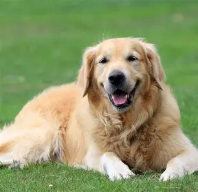
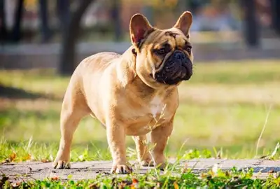
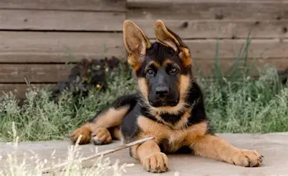
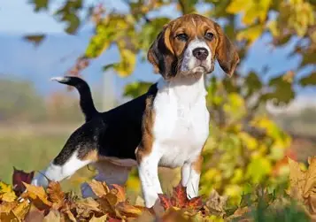
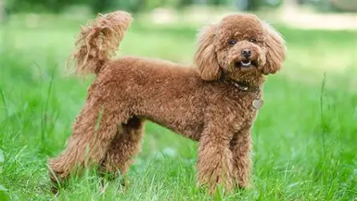
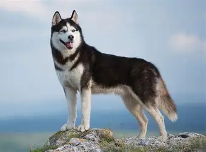

Explore different dog breeds and their characteristics below.

-ឈ្មោល៖ កម្ពស់ប្រហែល ៥៨–៦១ សង់ទីម៉ែត្រ និងទម្ងន់ប្រហែល ២៩–៣៤ គីឡូក្រាម។
-ញី៖ កម្ពស់ប្រហែល ៥១–៥៦ សង់ទីម៉ែត្រ និងទម្ងន់ប្រហែល ២៥–២៩ គីឡូក្រាម។
-អាយុកាល៖ ប្រហែល ១០ ដល់ ១២ ឆ្នាំ។
-ការថែទាំ៖ ត្រូវការការលេង និងហាត់ប្រាណច្រើន (យ៉ាងហោចណាស់ ១ ដល់ ២ ម៉ោងក្នុងមួយថ្ងៃ) ព្រោះវាជាឆ្កែមានថាមពលខ្លាំង។ វាមានរោមក្រាស់ដែលត្រូវដុសសម្អាតជាប្រចាំក្នុងមួយសប្តាហ៍។

-ទម្ងន់ជាមធ្យមប្រហែល ៧ ដល់ ១២ គីឡូក្រាម (ក្រោម ២៨ ផោន)។
-កម្ពស់ប្រហែល ២៧–៣១ សង់ទីម៉ែត្រ (១១-១៣ អ៊ីញ)។
-អាយុកាល៖ ប្រហែល ១០ ដល់ ១២ ឆ្នាំ។
-ការថែទាំ៖ ងាយស្រួលរស់នៅទីក្រុង ឬផ្ទះល្វែង មិនត្រូវការការហាត់ប្រាណខ្លាំងក្លាពេកទេ ប៉ុន្តែត្រូវប្រយ័ត្នរឿងក្តៅខ្លាំង ព្រោះវាជាពូជដែលមានច្រមុះខ្លី ពិបាកដកដង្ហើម។

-ទម្ងន់ជាមធ្យមចន្លោះពី ២២ ដល់ ៤០ គីឡូក្រាម អាស្រ័យលើភេទឈ្មោល ឬញី។
-អាយុកាល៖ ប្រហែល ៩ ដល់ ១៣ ឆ្នាំ។
-ការថែទាំ៖ ជាឆ្កែឆ្លាតខ្លាំង ត្រូវការការហ្វឹកហាត់បញ្ញា និងការដើរលេងហាត់ប្រាណប្រហែល ១.៥ ដល់ ២ ម៉ោងក្នុងមួយថ្ងៃ ស័ក្តិសមធ្វើជាឆ្កែយាម និងការពារ។

-ទម្ងន់ជាមធ្យមប្រហែល ៩ ដល់ ១៤ គីឡូក្រាម។
-អាយុកាល៖ ប្រហែល ១០ ដល់ ១៥ ឆ្នាំ។
-ការថែទាំ៖ មានក្រអូបជើងខ្លាំង (តាមប្រមាញ់ក្លិន) ចូលចិត្តការដើរលេងខាងក្រៅ តែត្រូវប្រយ័ត្នរឿងរត់បាត់បើគ្មានខ្សែចង ឬរបងព័ទ្ធជុំវិញ។

- កម្ពស់ប្រហែល ២៨–៣៨ សង់ទីម៉ែត្រ និងទម្ងន់ប្រហែល ៦ ដល់ ៨ គីឡូក្រាម។
-អាយុកាល៖ ប្រហែល ១០ ដល់ ១៨ ឆ្នាំ។
-ការថែទាំ៖ ជាពូជដែលឆ្លាតរហ័សរហួនបំផុតក្នុងការហ្វឹកហាត់ ហើយរោមរបស់វាគឺស័ក្តិសមសម្រាប់អ្នកដែលងាយអាលែក្ស៊ី ព្រោះវាជ្រុះរោមតិចតួចបំផុត។

-ឈ្មោល៖ ទម្ងន់ប្រហែល ២០–២៧ គីឡូក្រាម។
-ញី៖ ទម្ងន់ប្រហែល ១៦–២៣ គីឡូក្រាម។
-អាយុកាល៖ ប្រហែល ១២ ដល់ ១៤ ឆ្នាំ។
-ការថែទាំ៖ មានថាមពលខ្លាំងក្លាបំផុត ចូលចិត្តរត់ និងត្រូវការកន្លែងទូលាយ។ ពួកវាត្រូវការការដុសសម្អាតរោមញឹកញាប់ ជាពិសេសក្នុងរដូវផ្លាស់ប្តូររោម។